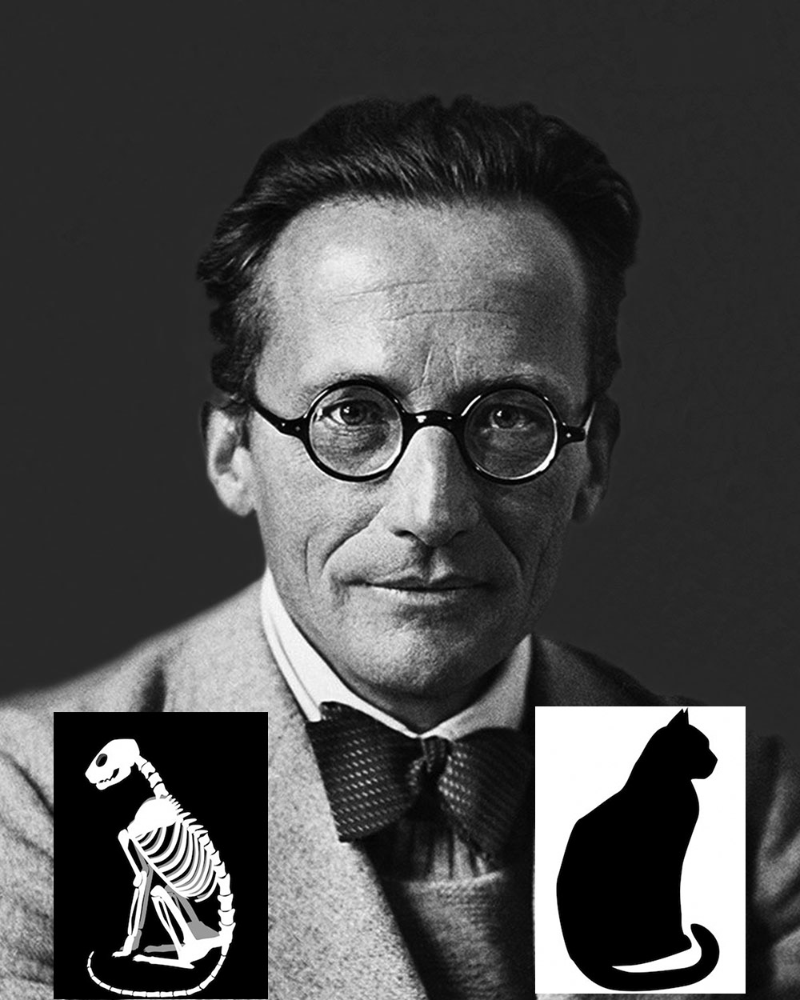

|  |
David León es un físico cuántico que se dedica a estudiar el proceso de medida y la naturaleza de los estados cuánticos1. Se inspira en las ideas de David Bohm, uno de los mejores físicos cuánticos de todos los tiempos2, y busca comprender la realidad desde una perspectiva holística y no determinista3. Ha publicado varios artículos y libros sobre sus investigaciones, y ha recibido numerosos premios y reconocimientos por su trabajo. Actualmente es profesor en la Universidad de Barcelona y dirige un grupo de investigación sobre física cuántica y filosofía. |
|
Datos PersonalesNombre: David Apellidos: Leon valle Edad: Privado |
||
ExperienciaLHC MIT NASA |
||